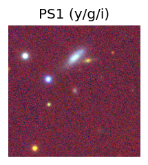
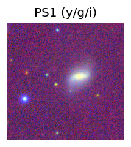
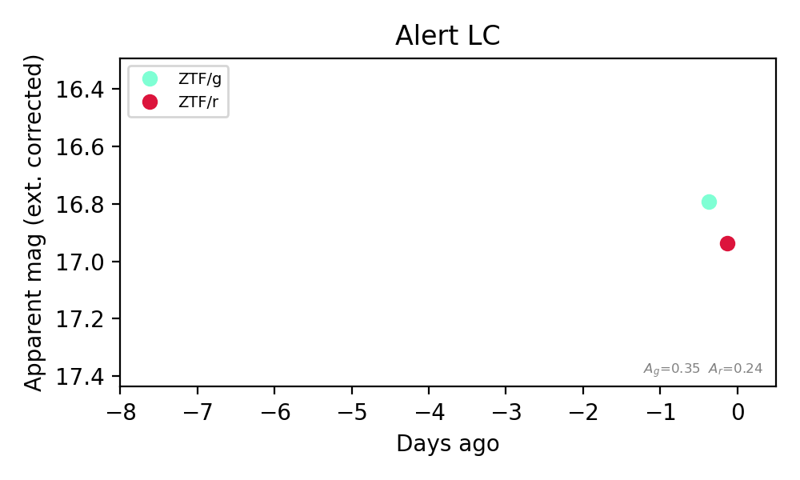

Candidate List 20261121Last night — ZTF: 2,029 passed basic cuts (39 young) · LSST: 0 passed basic cuts (0 young)Previous Day Next Day
Section 1: New Sources (age<1d) Section 2: Old (1-5d) sources observed last night Section 3: Already classified as a supernova on TNSplaceholder
Section 1: New Afterglow/FBOT Cands Last Night (0)
Section 2: Older Sources Observed Last Night (2)
1. [ZTF] ZTF26achvodo (FBOT?) (TNS: AT 2026akgw) [Back to Top] [Share] [Trigger Swift] [Fritz Alert] [Fritz Source] [Lasair]RA, Dec: 343.54603, 29.58331 22h54m11.05s, 29d34m59.93sGalactic (l, b): 94.46202, -26.7277 ext(g-r) = 0.07

TESS: Sectors [56 83]
SDSS (<15 kpc):Found SDSS phot-z: z=0.22; peak abs mag = -21.53
PS1: 0 sources in 3 arcsec
LegacySurvey: 1 sources in 3 arcsec Closest: d = 0.25 arcsec, 218.5 deg (east of north) photoz=0.56 (68% bounds 0.46, 0.65), type=EXP peak abs mag (ext. corrected) = -23.89 (68% bounds -23.36, -24.27)

Rise Rate:
g: 0.2 mag/day
Fade Rate:
2. [ZTF] ZTF26aciajxo (FBOT?) (TNS: AT 2026ajxu) [Back to Top] [Share] [Trigger Swift] [Fritz Alert] [Fritz Source] [Lasair]RA, Dec: 40.15348, 45.50656 2h40m36.84s, 45d30m23.63sGalactic (l, b): 142.20942, -13.23928 ext(g-r) = 0.113

TESS: Sectors [58 85]
SDSS (<15 kpc):Found SDSS phot-z: z=0.05; peak abs mag = -20.15
NED host (10 arcsec):Found WISEA J024036.20+453025.5 (G, 6.9″); NED spec-z: z=0.0305 [zflag SUN]; peak abs mag = -18.91
PS1: 1 source in 3 arcsec Closest: d = 2.96 arcsec photoz=0.08+/-0.01 peak abs mag = -21.13
LegacySurvey: 0 sources in 3 arcsec

Extinction-corrected gr color:
From alerts: -0.14 +/- 0.03 mag
Rise Rate:
g: 0.38 mag/day
r: 0.48 mag/day
Fade Rate:
Section 3: Already classified as a supernova on TNS (0)